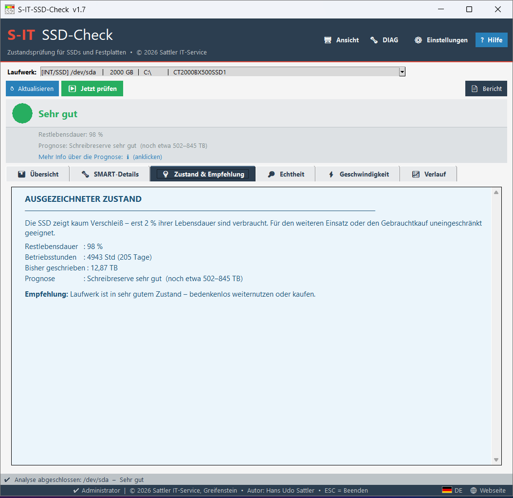
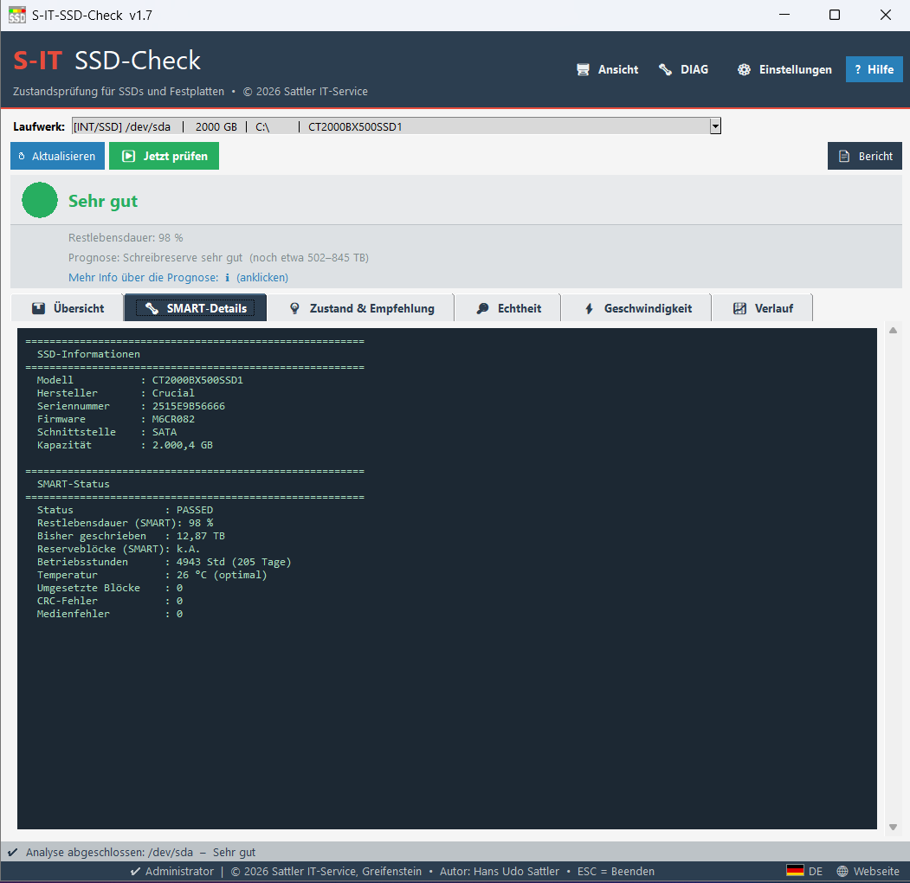
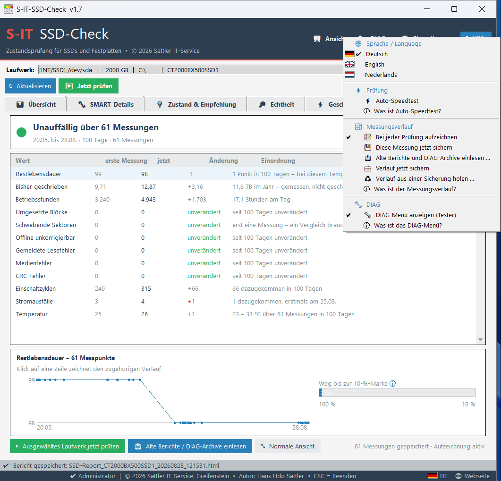
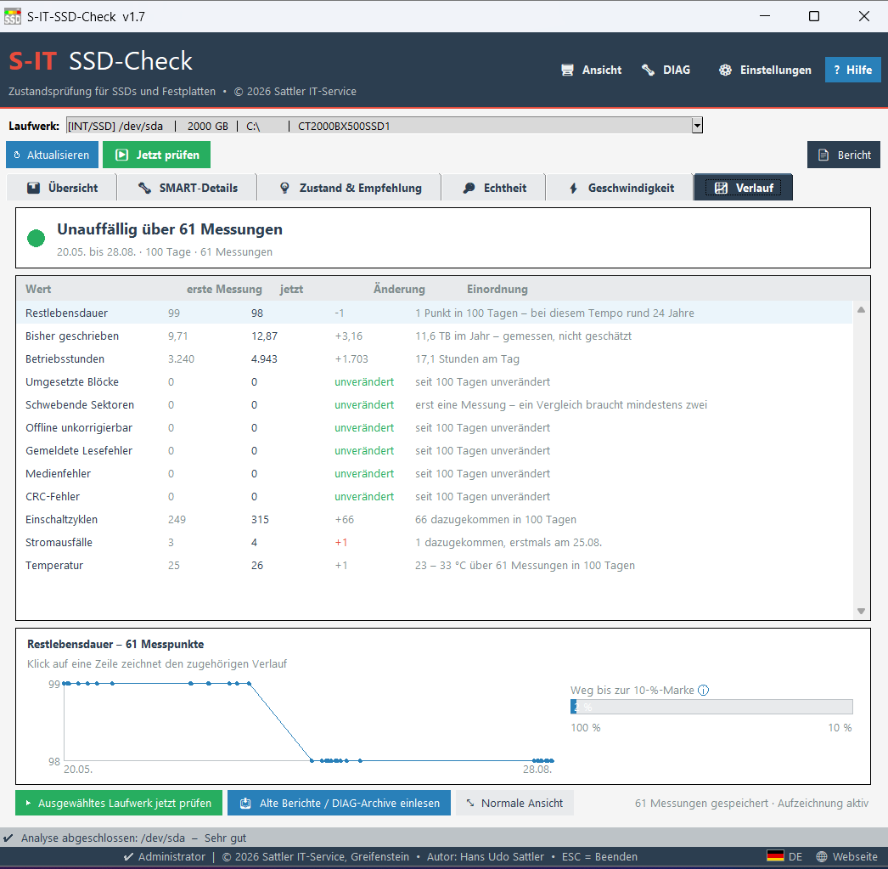

🚦 Ampel-Bewertung – auf einen Blick
Sehr gut und Gut sind beide grün und beide uneingeschränkt geeignet – Gut in einem etwas helleren Ton, damit die beiden Stufen auf einen Blick unterscheidbar sind. Die Stufen sagen nur, wie viel Lebensdauer schon verbraucht ist. Der Bewertungstext nennt den Anteil im Klartext, damit man selbst urteilen kann. Und unabhängig davon: Ein nachgewiesener Defekt – schwebende oder nicht korrigierbare Sektoren, Medienfehler – schaltet die Ampel immer auf Rot, auch wenn das Laufwerk „100 % Restlebensdauer" meldet. Bei Festplatten heißt es SMART o.k., SMART o.k. – beobachten oder Fehler – prüfen: Eine HDD verschleißt mechanisch, nicht am Flash.
SATA & NVMe
Unterstützt alle gängigen SSD-Typen: 2,5"-SATA, M.2 SATA und M.2 NVMe – intern sowie über USB-SATA-Adapter und Dockingstationen.
Automatische Laufwerkserkennung
Zeigt alle angeschlossenen Laufwerke mit Typ (INT/USB), Medienart (SSD/HDD), Größe, Laufwerksbuchstaben und Modellname – sortiert nach Größe.
Messungsverlauf NEU
Hält bei jeder Prüfung die Kennzahlen fest. Aus mehreren Messungen entsteht ein Verlauf, der zeigt, was sich verändert hat – und was nicht: „CRC-Fehler: seit 95 Tagen kein neuer.“ Frühere Berichte und Diagnosedateien lassen sich einlesen, der Verlauf muss nicht bei null anfangen.
Drei Sprachen NEU
Oberfläche, Erklärtexte, Meldungen und der HTML-Bericht auf Deutsch, Englisch und Niederländisch. Umgestellt wird unter „Einstellungen“; Deutsch ist fest eingebaut und braucht keine Beilage.
SMART-Analyse
Liest Restlebensdauer, Betriebsstunden, Temperatur, TBW, Reserveblöcke (NVMe), CRC-Fehler, umgesetzte Blöcke, gemeldete Lesefehler und Medienfehler aus.
Echtheits-Check
Prüft die SMART-Werte auf Plausibilität und erkennt zurückgesetzte Zähler – etwa wenn ein gebrauchtes Laufwerk als „neu“ verkauft wird. Findet Widersprüche zwischen Laufzeit, Verschleiß und Schreibzyklen.
Nachvollziehbare Bewertung NEU
Kein Urteil ohne Grundlage: Ein rotes Ergebnis verlangt einen belegten Defekt, der Text nennt den verbrauchten Anteil, und unglaubwürdige Werte werden offen als „k.A.“ ausgewiesen statt behauptet. Wie das Tool bewertet, steht in der Hilfe.
Hersteller-Erkennung
Erkennt automatisch den Hersteller aus dem Modellnamen: Samsung, Crucial, WD, Seagate, Kingston, SanDisk, LiteOn, InnovationIT u.v.m.
HTML-Bericht
Exportiert einen übersichtlichen Prüfbericht als HTML-Datei – für die eigene Dokumentation, zur Weitergabe an Kunden oder als Nachweis beim Gebrauchtkauf. Für A4 hochkant bei 100 % eingerichtet, mit sauberem Seitenumbruch.
DPI-Skalierung
Passt sich automatisch dem verfügbaren Bildschirmplatz an, statt stur der Windows-Einstellung zu folgen. Feste Werte von 80 % bis 200 % bleiben wählbar und werden gespeichert – startet sofort korrekt auf jedem Monitor.
Seit Version 1.7.0 spricht S-IT SSD-Check Deutsch, Englisch und Niederländisch – Oberfläche, Erklärtexte, Meldungen und der HTML-Bericht. Umgestellt wird unter ⚙ Einstellungen; Deutsch ist fest eingebaut und braucht keine Beilage.
English
Nederlands
Eine einzelne Prüfung ist eine Momentaufnahme. Mehrere Prüfungen ergeben einen Verlauf – und der beantwortet Fragen, die eine Momentaufnahme nicht beantworten kann. Bei CRC-Fehlern etwa zählt nicht der Stand, sondern ob neue hinzukommen. Ein Zähler, der seit Monaten stillsteht, spricht für eine einwandfreie Verbindung.
| Wert | erste Messung | jetzt | Änderung | Einordnung |
|---|---|---|---|---|
| Lade-/Parkzyklen | 82.155 | 85.482 | +3.327 | 52 am Tag – jetzt bei 28 % der Auslegungsgrenze, noch rund 11 Jahre |
| Betriebsstunden | 26.977 | 28.105 | +1.128 | 17,9 Stunden am Tag – Dauerbetrieb |
| Umgesetzte Blöcke | 0 | 0 | unverändert | keine Sektorverluste in 63 Tagen |
| CRC-Fehler | 0 | 0 | unverändert | Verbindung stabil |
| Temperatur | 37 °C | 31 °C | 29 – 39 °C | Spanne über alle Messungen – durchgehend unbedenklich |
Echte Werte einer Festplatte über 15 Messungen in 63 Tagen. Die letzte Spalte ist der eigentliche Gewinn: Ein Zahlenpaar sagt wenig, erst die Einordnung macht daraus eine Aussage.
Drei Darstellungen für drei Fragen
Die Form richtet sich nach dem Wert – das Programm wählt sie selbst.
Die Kurve zeigt, wie gleichmäßig es läuft; der Balken, wie weit es bis zur Grenze noch ist.
Ein Punkt je Messung. Eine Kurve wäre hier eine flache Linie auf null – richtig, aber nichtssagend, dabei ist genau das die beste Nachricht. Kommt etwas hinzu, färbt sich der Balken ab dieser Stelle: So sieht man sofort, ob ein Vorfall frisch ist oder längst zurückliegt.
Ein Trend wäre bei schwankenden Werten Scheingenauigkeit. Das Band zeigt die Spanne vor den Warnschwellen – hier bleiben 26 Grad Luft bis zur ersten Stufe.









Wie schnell ist eine SSD?
SATA, M.2 und NVMe im Vergleich – welche Werte normal sind und warum Tempo nichts über die Gesundheit aussagt.
Wie schnell ist eine Festplatte?
Warum 140 MB/s für eine HDD ein guter Wert sind – Drehzahl, Datendichte und typische Werte nach Bauart.
Tool-Zweck & Grenzen
Wofür der S-IT SSD-Check gedacht ist, welche Adapter geeignet sind und wo die Grenzen der SMART-Auswertung liegen.
Wie lange hält ein Laufwerk?
Badewannenkurve, echte Ausfallraten (Backblaze) – und warum auch eine gesunde alte Platte regelmäßige Backups braucht.
→ Ausführliche Erläuterung: Tool-Zweck, geeignete Adapter & Bewertungsgrenzen
- Messungsverlauf: Das Tool hält bei jeder Prüfung die Kennzahlen fest. Aus mehreren Messungen entsteht ein Verlauf, der zeigt, was sich verändert hat – und was nicht. Ein eigener Reiter fasst das zusammen: Urteil über den Zeitraum, die Werte mit ihrer Veränderung, dazu ein Diagramm
- Frühere Messungen einlesen: Vorhandene Berichte und Diagnosedateien lassen sich importieren – der Verlauf muss nicht bei null anfangen. Werte, die nicht zur Messreihe passen, werden dabei ausgelassen und benannt
- Drei Sprachen: Oberfläche, Erklärtexte, Meldungen und HTML-Bericht auf Deutsch, Englisch und Niederländisch; umgestellt wird unter „Einstellungen“
- Neuer Knopf „Einstellungen“: Sprache, automatischer Geschwindigkeitstest, DIAG-Menü und Verlauf stehen beisammen. „Ansicht“ enthält nur noch, was das Fenster betrifft
- Sicherung der Messdaten: Der Verlauf lässt sich sichern; nach einer Neuinstallation bietet das Tool die Rückholung von selbst an
- 100 % Restlebensdauer bei nachgewiesenem Defekt wird entwertet – der Wert stand bisher unkommentiert neben einem roten Urteil
- Der Bericht weist den geprüften Datenträgertyp aus: SSD (SATA), SSD (NVMe), Festplatte mit Drehzahl oder USB-Datenträger
- Berichte lassen sich wieder auf Netzwerkfreigaben speichern
- Der Reiter heißt jetzt „Zustand & Empfehlung“ – der alte Name benannte einen Anlass, beurteilt wird längst jedes Laufwerk
- Hinweis im Berichtsfuß auf den Weg zum PDF; Hilfe dreisprachig, Lizenzen und Haftungsausschluss ebenso
Alle früheren Versionen stehen im vollständigen Änderungsverlauf.
Über eine kleine Unterstützung freue ich mich:
PayPal – tool-entwicklung@sattler-it.de